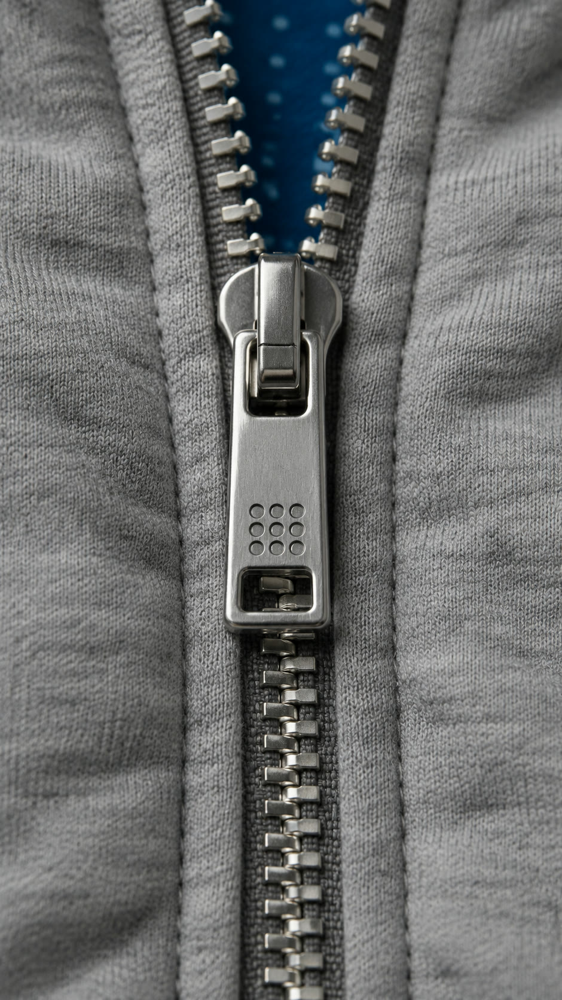
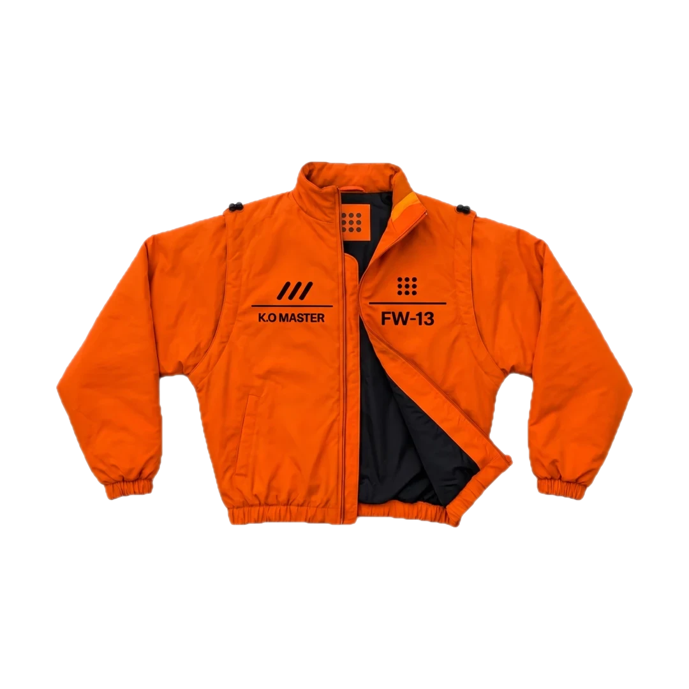
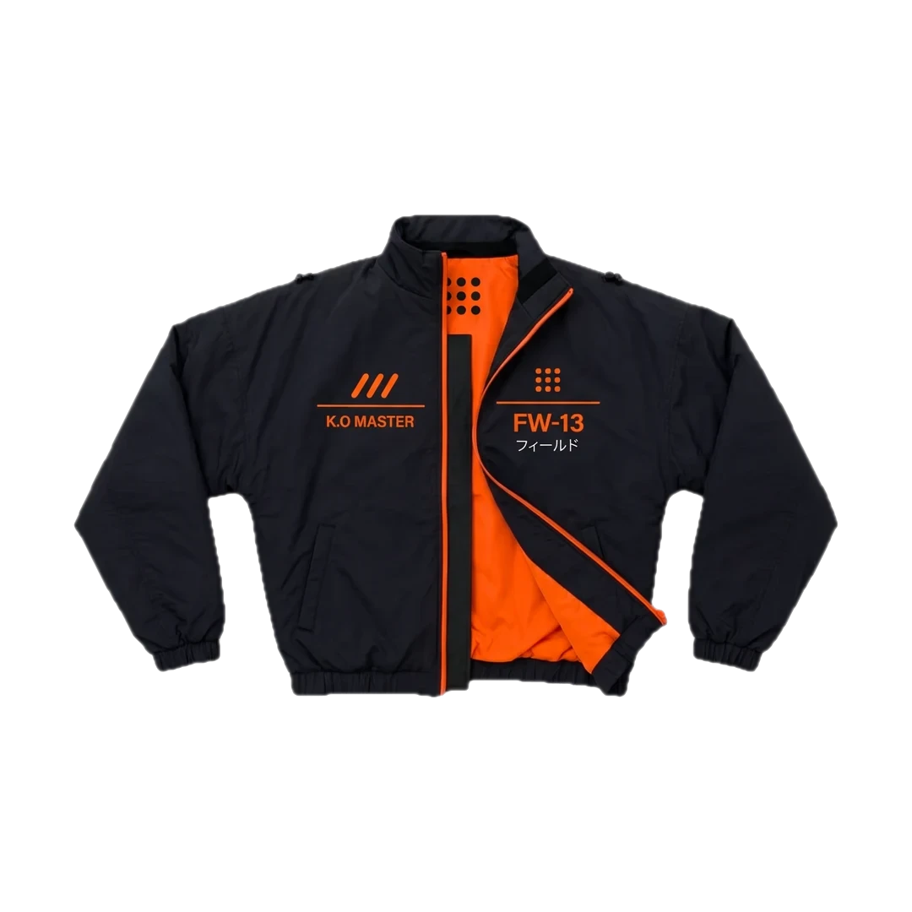
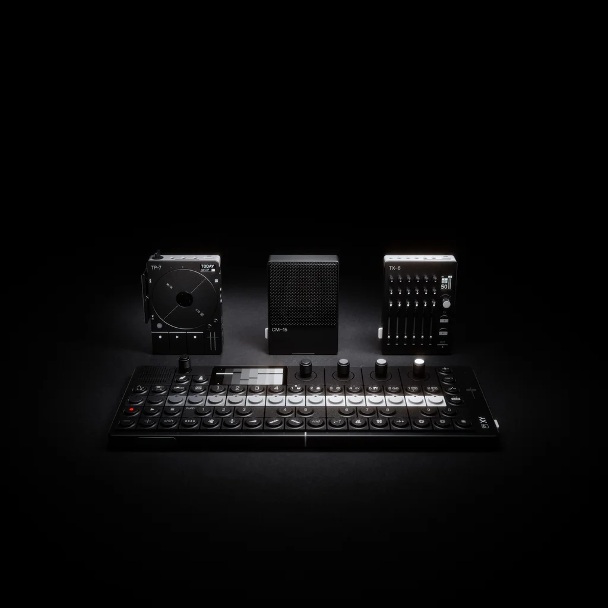
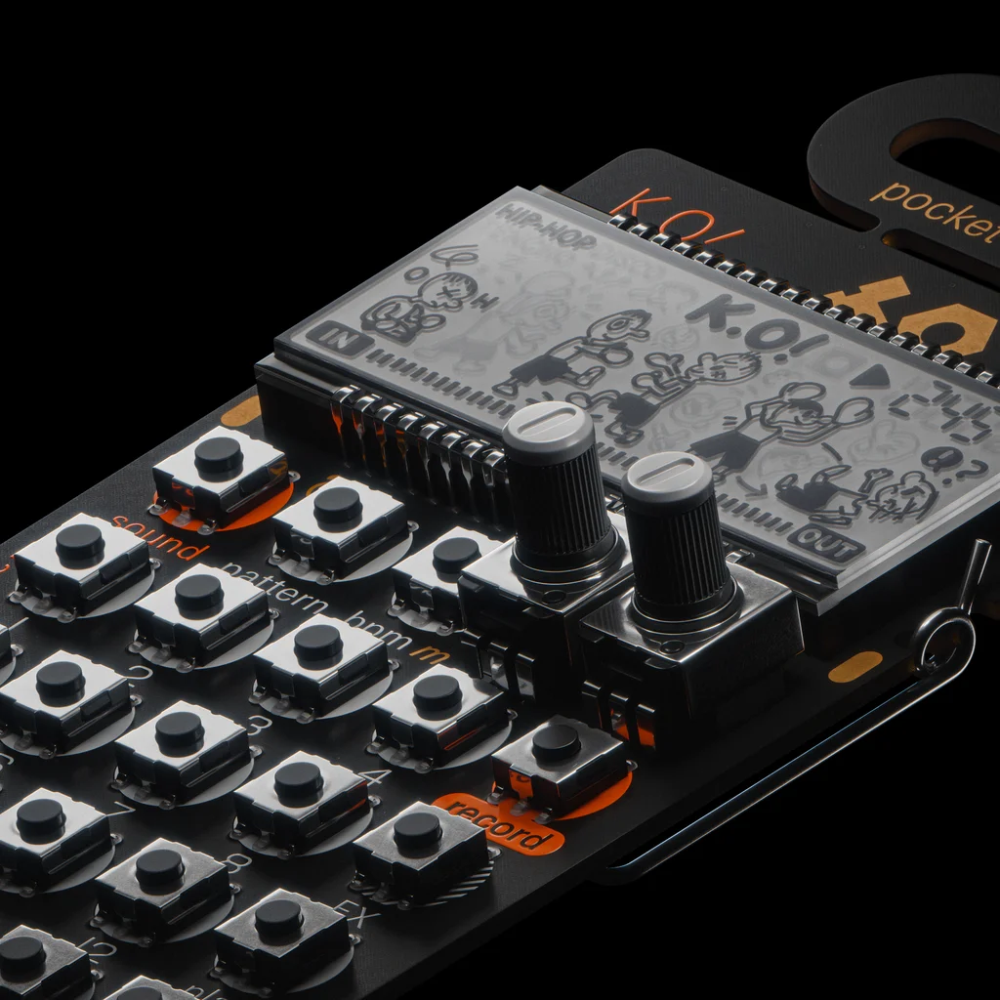
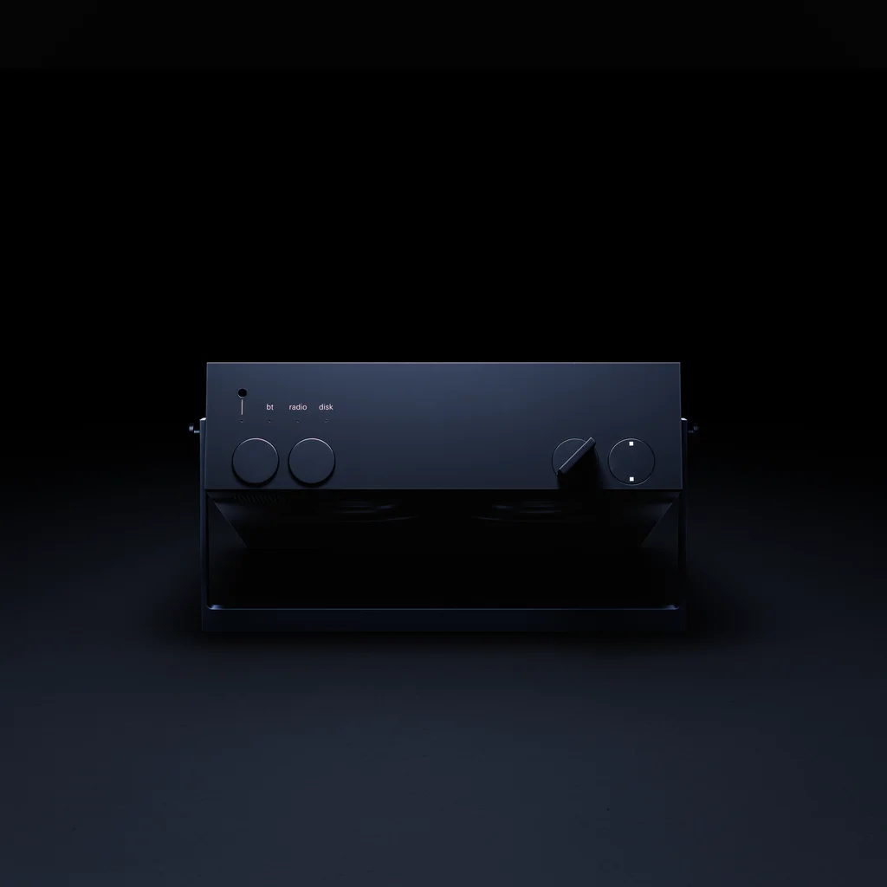
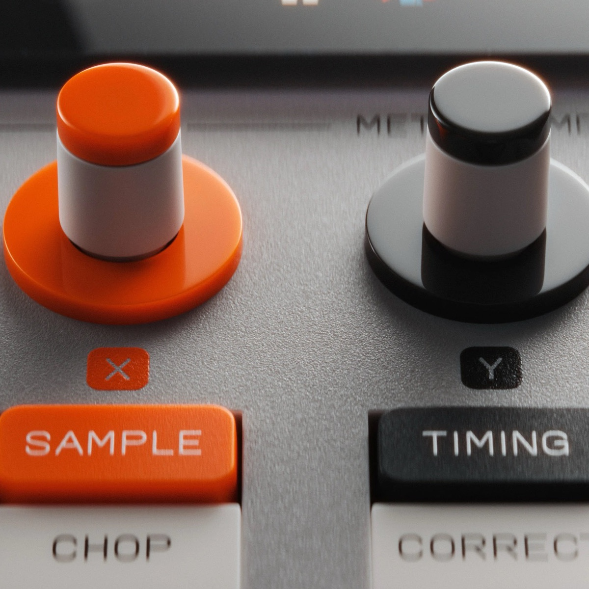

field.
Neuf basiques pour la journée de fabrication. Sobres à l'extérieur. Ouvrez-les : la trame de points apparaît.
de l'extérieur,un basique.
à l'intérieur,la trame.
FW-03 · sweat zippé à capuche · 39,90 €un basique, rien de plus
Molleton gris chiné, coupe boxy, aucun cordon. De l'extérieur, un sweat que tout le monde porte.
la trame apparaît
À l'intérieur, une doublure bleue imprimée d'une grille régulière de points blancs. Le même motif sur les neuf pièces, en orange sur l'édition orange.
ce qui est caché, montré
UNIQLO enfouit la composition dans un accordéon, Teenage Engineering noie ses cotes dans une page. field. sort au jour ce qui est à l'intérieur.
la doublure, de prèsle même point,sur les neuf pièces.bleu 0071BB · points blancs · coton
passez le curseur sur la trame
gravés,
pas imprimés.
Zip métal argenté, dents larges, tirette pleine. Les 9 points y sont gravés dans la masse : le motif fait partie de la pièce.
- métal
- argenté, brossé
- motif
- 3 × 3, gravé
- étiquette
- blanche, cousue au col
la
collection
9 pièces + 3 hors gamme
9 coloris
de 12,90 € à 149,90 €
Trois pièces dessinées d'après une machine de teenage engineering : elles en reprennent les couleurs, le lettrage et le nom, et les portent à l'extérieur.
la façade.
Le marquage se lit comme le panneau d'une machine : un bloc de commande à gauche, un bloc d'identité à droite, le zip entre les deux. Tout le reste est laissé nu.
- 04 · épaulettepatte à pression sur une épaule rembourrée qui dépasse la carrure
- 02 · bloc de commandetrois barres et K.O MASTER, le lettrage de l'EP–133
- 06 · poignetmanche ample, resserrée d'un coup sur un élastique


- 01 · col montantil monte jusqu'au menton, l'étiquette 9 points cousue dedans
- 03 · bloc d'identitéla grille 3 × 3 et le numéro de la pièce
- 05 · doublurematelassée, la parementure en contraste le long du zip
portés.
Deux mannequins, vingt-deux looks. La doublure se montre là où le vêtement s'ouvre : au panneau, à la capuche, aux revers.
défilez →teenage
engineering
Studio de design et d'ingénierie fondé à Stockholm en 2005. Synthétiseurs, enceintes, micros, objets : chaque produit se lit comme un schéma, boutons, cotes et fonctions en évidence.
Leur système nomade s'appelle field system : un studio qui tient dans la poche, sur batterie, où tout se connecte. La collection lui emprunte son nom. field. habille la journée de fabrication, au studio comme dehors.
- 2005
- fondé à Stockholm
- OP–1
- le synthé qui les a révélés
- field
- la gamme nomade

Un studio qui tient dans la poche : créer et enregistrer partout, n'importe quand.

De petits instruments ultra-portables, au son de studio, abordables pour tous.

Une enceinte Bluetooth à interface motorisée, radio FM et boucle de bande de deux heures.

Le sampler qui a donné son orange à la collection : touches grises, commandes orange, rien d'autre.
le 9 octobre.
field. sort le 09.10 en ligne et dans une sélection de boutiques. Les pièces hors gamme partent en série limitée, elles ne seront pas réassorties. Laissez votre adresse, on vous prévient une heure avant l'ouverture.
- une question
- bonjour@field-collection.example
- en boutique
- Paris Opéra, Lyon Part-Dieu, Lille Grand Place, à partir du 09.10
- retrait
- En 1 h dans les boutiques qui ont la pièce en stock